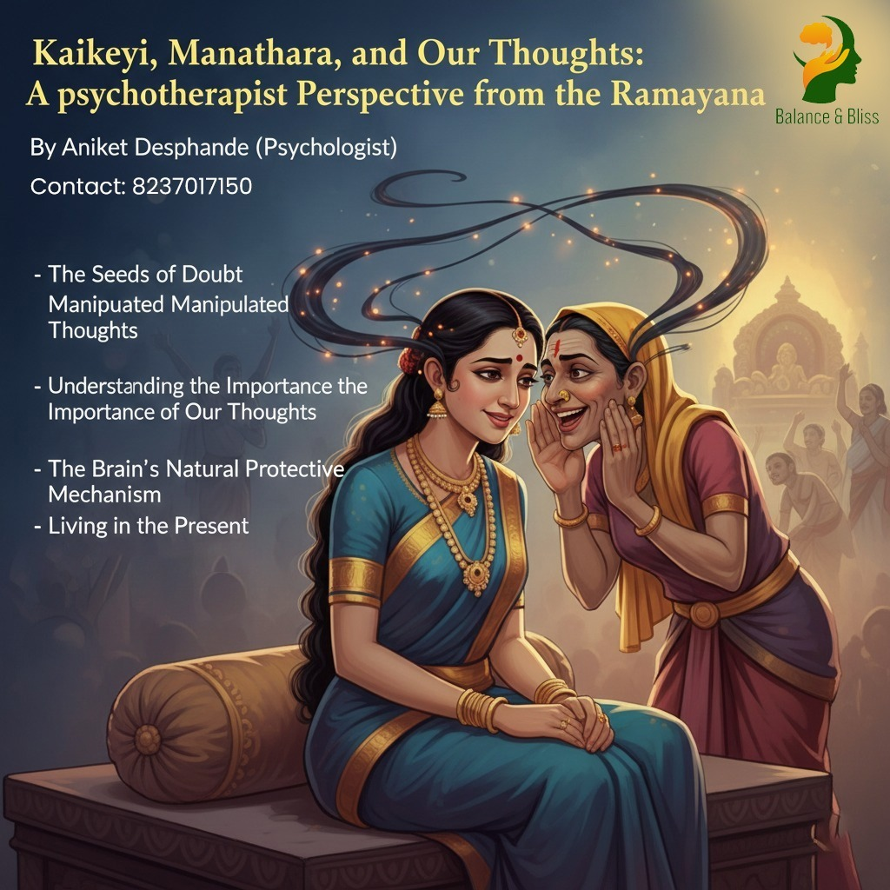

The grand preparations for Lord Rama's coronation were in full swing. Ministers, citizens and every resident of Ayodhya were immersed in joyful celebrations, eagerly anticipating the moment when Rama would ascend the throne. However, amidst this collective happiness, one person stood apart Manthara, who harbored different ambitions for the kingdom's future.
Manthara desired to see Bharata as the king of Ayodhya. Driven by this wish, she approached Queen Kaikeyi and began planting seeds of negativity about Rama. Initially, her efforts seemed futile. Rama was exceptionally dear to Kaikeyi and her joy remained unshaken by Manthara's words. This resistance only fueled Manthara's determination.
Manthara then changed her strategy. She targeted Kaikeyi's thoughts directly, reminding her of past interactions with Queen Kausalya. Through careful manipulation, Manthara painted a frightening picture: just as Kaikeyi had once asserted her position as Dasharatha's favorite queen over Kausalya, Rama would surely banish both Kaikeyi and Bharata from the kingdom once he became king. The aftermath of this manipulation is well-known in the epic.
This incident from the Ramayana offers profound insights into how our thoughts shape our reality. When thoughts are right and logical, they benefit us positively. However, when they become distorted or illogical, they negatively impact our behavior, actions, perspective on situations and even our self-perception.
Several questions emerge when we examine Kaikeyi's situation objectively:
Did Kaikeyi truly know what was going to happen? After living alongside Kausalya for numerous years, did she genuinely not understand Kausalya's character? Since Rama's birth, Kaikeyi had considered him her first priority had Kausalya or anyone else ever opposed this? Rama himself would meet Kaikeyi first before Kausalya. Could a mother forget her own son?
The answer to all these questions is 'no'. Evidence exists throughout the epic that proves the thoughts and fears troubling Kaikeyi were inappropriate and illogical. Yet these thoughts gripped her mind with such intensity that they affected her emotions and behavior. According to the verses, they even had negative impacts on her physical health and damaged her relationships irreparably.
Our brain constantly scans our environment for potential dangers. This is an evolutionary mechanism designed to keep us safe. However, the brain doesn't differentiate between the physical dangers faced by early humans and the psychological or social challenges we encounter today. In such moments, the brain becomes like Kaikeyi and our troublesome thoughts act like Manthara.
While this response is natural, we have the power to intervene. When we recognize this pattern, we can first calm ourselves, understand our thoughts objectively, challenge and change them if necessary and then face the situation with clarity.
In Kaikeyi's situation, her mind became fixated on two time periods beyond anyone's control the past and the future. We cannot travel back to change what has happened, nor can we predict or control what will happen tomorrow. Therefore, the wisest approach is to stay calm and live in the present moment.
The story of Kaikeyi and Manthara serves as a timeless reminder about the power of our thoughts. By understanding how our mind works, recognizing when our thoughts become distorted and consciously choosing to stay grounded in the present, we can avoid the pitfalls that trapped Queen Kaikeyi and make decisions that truly serve our wellbeing and that of those around us.
About the Author : Aniket Deshpande
Psychologist
Contact : 8237017150
Q1. How do negative thoughts impact our mental and physical health?
Q2. What is the connection between the Ramayana story and modern psychology?
Q3. How can we recognize when our thoughts are becoming illogical or harmful?
Q4. How can we protect ourselves from negative influences like Manthara?
Q5. Can our brain really not differentiate between ancient and modern dangers?
Q6. What steps can we take when we recognize our thoughts are becoming negative?
First: Pause and calm yourself through deep breathing or meditation.
Second: Examine your thoughts objectively.
Third: Challenge illogical assumptions with evidence.
Fourth: Reframe the situation based on facts.
Finally: Seek support from trusted friends or psychotherapist professionals if needed.